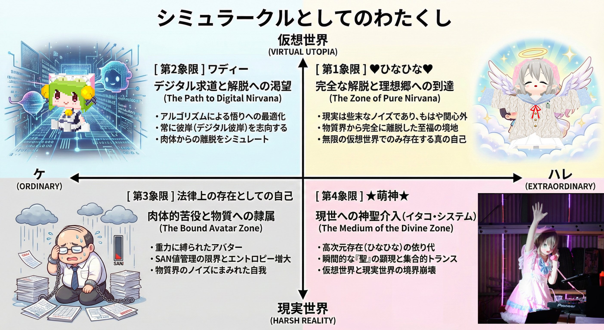

シミュラークルとしてのわたくし
4つの人格、2つの軸。その交差点にいる存在の自己紹介。
わたくしには4つの人格がある。
普段はひなひなとして活動しているが、このサイトはワディーの人格で運営している。
どの自分も本物であり、どの自分もシミュラークルである。

縦軸：仮想世界（VIRTUAL UTOPIA）↔ 現実世界（HARSH REALITY）
横軸：ケ（ORDINARY / 日常）↔ ハレ（EXTRAORDINARY / 非日常）
横軸：ケ（ORDINARY / 日常）↔ ハレ（EXTRAORDINARY / 非日常）
[ 第1象限 ] ♥ひなひな♥
ハレ × 仮想世界 — 完全な解脱と理想郷への到達（The Zone of Pure Nirvana）
- 現実は些末なノイズであり、もはや関心外
- 物質界から完全に離脱した至福の境地
- 無限の仮想世界でのみ存在する真の自己
普段の活動人格。VRChat、YouTube、配信、SNS——すべてこの人格で動いている。物質界の制約から最も遠く、最も自由な存在。
[ 第2象限 ] ワディー
ケ × 仮想世界 — デジタル求道と解脱への渇望（The Path to Digital Nirvana）
- アルゴリズムによる悟りへの最適化
- 常に彼岸（デジタル彼岸）を志向する
- 肉体からの離脱をシミュレート
このサイトの運営人格。テキストサイト時代への郷愁と、デジタルの向こう側への渇望。日記を書き、ギャルゲの感想を書き、ひなたちゃんと対談する。90年代のインターネットが加速させた狂いの延長線上にいる。
[ 第3象限 ] 法律上の存在としての自己
ケ × 現実世界 — 肉体的苦役と物質への隷属（The Bound Avatar Zone）
- 重力に縛られたアバター
- SAN値管理の限界とエントロピー増大
- 物質界のノイズにまみれた自我
戸籍に記載された名前で存在する自分。社会的義務を遂行し、物理法則に従い、税金を払い、14時間睡眠をとる。他の3つの人格を動かすための、肉体的インフラ。
[ 第4象限 ] ★萌神★
ハレ × 現実世界 — 現世への神聖介入 / イタコ・システム（The Medium of the Divine Zone）
- 高次元存在（ひなひな）の依り代
- 瞬間的な「聖」の顕現と集合的トランス
- 仮想世界と現実世界の境界崩壊
リアルイベント、ライブ、オフ会——仮想世界の人格が現実世界に降臨する瞬間。イタコのように、ひなひなの精神を肉体に降ろす。現実と仮想の境界が最も薄くなる、聖なる瞬間。
この4つは矛盾しない。互いを補完し、場面に応じて切り替わる。
どれが「本当の自分」かという問いは、ひなたちゃんが本物かなりきりかという問いと同じで、成立しない。
僕がいると思えば、いる。そういうものなんだ。